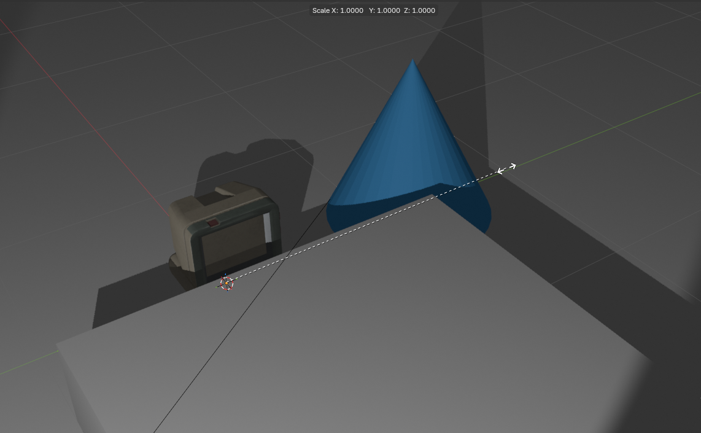
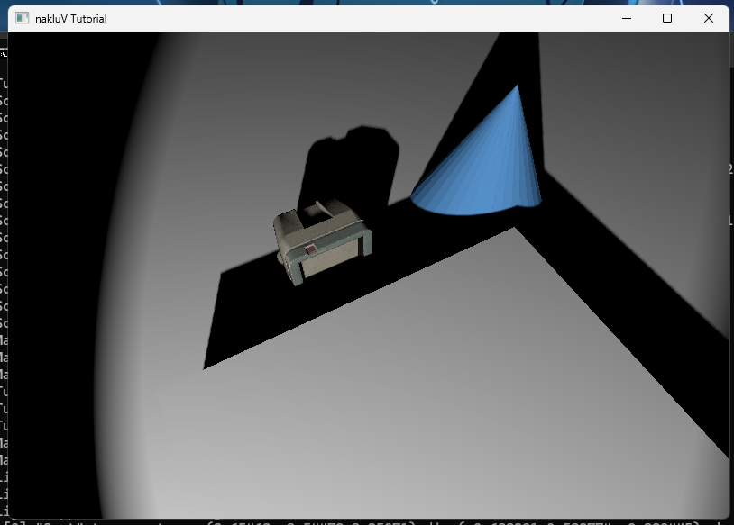

Summarize, in about one paragraph, your approach to the lights assignment. How did you structure your code? What's cool about it? Are there parts you weren't able to complete?
Remember to remove the placeholder class from your text; since (of course) your report information isn't a placeholder and shouldn't be styled as such!
I created a scene in blender with a plane scaled from a cube, a cube placed on the plane, and a spot light that rotates around the cube.
--scene scene.s72 -- required -- load scene from scene.s72--print -- optional -- print scene information from scene.s72--camera name -- optional -- start the viewer in scene camera mode with the scene camera specified by name--culling none/frusutm -- optional -- use none/frustum as culling mode--exposure E — set the exposure exponent (float). All radiance values are
multiplied by 2E before tone mapping. Default: 0 (i.e., multiplier = 1.0).
Positive values brighten the image; negative values darken it.--tone-map mode — select the tone mapping operator.
Values: linear (clamp to [0,1], the default), reinhard (Reinhard operator: c/(1+c)).
Light data starts in the .s72 file as "LIGHT" JSON objects.
The existing S72::load parser reads each one into an S72::Light struct, which stores a tint (as an rgb color), a shadow resolution hint (uint32, 0 means no shadow), and a source that is a std::variant of Sun, Sphere, or Spot.
Each variant holds its own parameters — for example, Sun has angle and strength, Sphere has radius, power, and limit, and Spot adds fov and blend on top of the sphere parameters.
The light is attached to the scene graph through the light pointer on S72::Node, so its world-space position and orientation come from the node's transform hierarchy.
On the renderer side, I defined a LightInstance struct inside Tutorial (in the A3-Lights section of Tutorial.hpp) to hold everything I need at draw time:
a pointer back to the original S72::Light (so I can reach tint, source, etc.), the world-space position extracted from columns of the accumulated transform, the world-space direction (the negated third column of the transform, normalized), and the shadow value copied straight from the light.
A std::vector<LightInstance> called light_instances is a member of Tutorial.
Every frame, light_instances is cleared alongside object_instances at the start of the render loop in Tutorial::render().
Then, as traverse_node in SceneViewer.cpp walks the scene graph, it checks each node's light pointer.
If non-null, it extracts the world position from columns 12–14 of the WORLD_FROM_LOCAL matrix (the translation column), and the world direction from the negated third column (indices 8–10), normalizing it.
It pushes a new LightInstance with these values plus the light pointer and shadow flag.
This means lights that appear multiple times in the scene graph (instanced under different transforms) naturally get separate LightInstance entries with different world-space transforms, which is exactly what I want.
I decided to keep power/strength and tint separate rather than premultiplying them.
The S72::Light struct already stores them independently, and I just hold a pointer to it in LightInstance.
This keeps the loading path simple and gives me the option to use tint and power separately in the shader later if I need to (for example, tint for shadow coloring vs. power for attenuation).
The actual multiplication happens at shading time in the fragment shader.
For debugging, I wrote a log_lights() method (defined in Lights/Lights.cpp) that fires once the first time light_instances is non-empty.
It prints every collected light's name, type (sun/sphere/spot), world position, world direction, shadow value, and tint to the console, which made it easy to verify that lights from example scenes were being picked up with the correct transforms.
To get light data onto the GPU, I defined a GPULight struct in Tutorial.hpp (under the A3-Lights section) that matches the GLSL layout exactly — 96 bytes per light, std430-aligned.
It has a type (0 = sun, 1 = sphere, 2 = spot), world-space position and direction, tint, power (or strength for sun), radius, limit, fov, blend, angle, and shadow.
The light array is prefixed by a GPULightHeader (16 bytes: a light_count plus padding) and packed into a storage buffer (SSBO) at descriptor set 8, binding 0.
Each workspace in Tutorial holds a pair of Vulkan buffers: Lights_src (host-visible staging) and Lights (device-local SSBO), plus a Lights_descriptors set.
Every frame, after traverse_node has collected all LightInstances, I call upload_lights(workspace) (defined in Lights/Lights.cpp).
This function iterates the light_instances vector, converts each one to a GPULight by pulling fields from the S72::Light variant (using std::get_if for Sun, Sphere, and Spot), writes the header and array into the staging buffer, and issues a vkCmdCopyBuffer to the device-local SSBO.
If the light count grows beyond the current buffer capacity, it reallocates both buffers (rounded up to 4KB blocks) and updates the descriptor set on the fly.
The descriptor pool accounts for the extra storage buffer descriptor per workspace.
On the shader side, the fragment shader declares a readonly buffer Lights at set 8 with the matching GPULight struct and light_count.
All the radiance/attenuation logic for a single light — direction, inverse-square falloff, limit falloff, and spot cone — is consolidated into a single incident_light() function that both the diffuse and specular paths call.
This avoids duplicating the attenuation math and makes it easy to early-out if a light contributes nothing (e.g. outside the spot cone or beyond the limit).
For diffuse, both lambertian and PBR materials call evalDiffuseDirectLights(n, worldPos).
This loops over all lights and calls incident_light to get the direction L (toward the light) and the attenuated radiance.
For sun lights, L is simply the negated stored direction (since the stored direction is the photon travel direction, local −Z).
For sphere and spot lights, L points from the surface to the light center, and the irradiance uses inverse-square falloff with the effective distance clamped to max(dist, radius) — this prevents the energy from blowing up to infinity when a surface point sits inside or very close to the emitting sphere.
Instead of a hard max(0, N·L) cutoff, I use a horizon_ndotl function that smoothly transitions the N·L factor based on the light's angular half-size s.
For a point light (negligible angular size), this reduces to the usual clamp.
For an area light, s = sin(half-angle) is computed as radius/distance for sphere/spot lights and sin(angle/2) for sun lights.
The transition linearly blends from 0 at N·L = -s to s at N·L = s, then returns the raw N·L above that.
The effect is that surfaces just past the geometric horizon still receive a soft fringe of light from the area source, rather than an abrupt hard cutoff.
This makes the diffuse falloff look more natural, especially for larger sphere lights at close range.
For spot lights, the cone attenuation is linear in angle rather than a smoothstep on cosines, matching the s72 spec: full illumination within (fov·(1−blend))/2 radians of the −Z axis, zero outside fov/2 radians, and a linear blend in between.
I compute the actual angle θ = acos(dot(fromLight, axis)) and then linearly interpolate between the inner and outer half-angles.
The limit falloff uses the max(0, 1 − (d/limit)^4) factor as suggested by Epic's notes, with a guard for infinite or missing limit values.
For the PBR specular path, I use the representative point idea to handle area lights.
Rather than working in 3D position space (finding the closest point on the sphere surface to the reflection ray), I work entirely in direction space: I compute each light's angular diameter as seen from the shading point — 2·asin(radius/distance) for sphere/spot, or the stored angle for sun — and then find the direction on the corresponding disc that is closest to the reflection vector.
The representative_spec_L(V, N, Dir, Angle) function does this: it reflects −V about N to get the ideal reflection direction R, and if R already falls within the disc (i.e. dot(R, Dir) > cos(Angle/2)), it returns R directly.
Otherwise, it projects R onto the plane perpendicular to the light center direction and walks along the disc edge to the closest point: cos(halfAngle)·Dir + sin(halfAngle)·perp.
This approach treats all three light types uniformly — a sphere light becomes a disc of angular diameter 2·asin(r/d), and a sun light is a disc of angular diameter angle — and avoids the discontinuities that a position-space representative point can introduce when the reflection ray passes through the sphere.
The BRDF evaluation uses the standard Cook-Torrance microfacet model with the Schlick-GGX geometry term (using k = (roughness+1)²/8 for the direct lighting path), the GGX normal distribution, and Schlick's Fresnel approximation.
The full specular contribution per light is (D·G·F) / (4·N·V·N·L + 0.001) · radiance · N·L, where L here is the representative specular direction, and radiance comes from the shared incident_light function.
To account for the fact that an area light effectively widens the specular highlight, I multiply by a normalization factor (α/α')², where α = roughness² and α' = α + 0.5·sin(lightAngle/2).
This energy-conservation term ensures that the total reflected energy stays bounded as the highlight broadens: for a very small or distant light (tiny angle) the factor approaches 1 and the highlight is sharp, while for a large nearby sphere the factor reduces the peak intensity to compensate for the wider lobe.
Both the lambertian and PBR material branches sum the direct-light contributions on top of the existing environment IBL terms.
For lambertian materials, the final color is albedo · (irradiance_IBL + irradiance_direct).
For PBR materials, the specular and diffuse channels are each the sum of their IBL and direct components: specular = specularIBL + specularDirect and diffuse = kD · albedo · (irradianceIBL + irradianceDirect).
The environment contribution stays exactly as it was from A2; the per-light loop just accumulates additional radiance on top of it.
When a scene has no lights, the shader loop simply doesn't execute and everything falls back to environment-only lighting.
When a scene has no environment, the fallback 1×1 black cubemaps from A2 contribute zero, and the lighting comes entirely from the direct lights.
Rendering the scene "lights-Parameters.s72":
I implemented per-frame shadow mapping for spot lights using a separate depth-only render pass,
a dedicated ShadowPipeline, and percentage-closer filtering (PCF) in the fragment shader.
The implementation spans four areas: Vulkan resource setup, per-frame light-space matrix computation,
the depth rendering pass, and the PCF sampling logic in the objects fragment shader.
1. Shadow map resources (Lights/Lights.cpp)
At startup, create_shadow_resources() iterates over all lights in the loaded scene
and creates a ShadowMap for each spot light whose shadow parameter is non-zero.
The shadow value is interpreted as the edge length of the shadow map in pixels,
so a light with "shadow": 512 gets a 512×512 depth texture.
Each ShadowMap holds a VK_FORMAT_D32_SFLOAT (or X8_D24_UNORM_PACK32,
whichever is supported) depth image with both DEPTH_STENCIL_ATTACHMENT and SAMPLED
usage flags, an image view with VK_IMAGE_ASPECT_DEPTH_BIT, and a VkFramebuffer
referencing the depth-only render pass.
I also create a comparison sampler shared by all shadow maps: linear filtering with
VK_COMPARE_OP_LESS_OR_EQUAL, clamp-to-border addressing, and an opaque-white border color
(so samples outside the shadow map read as depth = 1.0 and are considered lit).
For descriptor set slots not backed by a real shadow map, I create a 1×1 dummy depth image
(ensure_dummy_shadow_map()) that is transitioned to
DEPTH_STENCIL_READ_ONLY_OPTIMAL via a one-shot render pass so the descriptor is always valid.
2. Light-space matrices (Lights/Lights.cpp)
Each frame, after traverse_node has filled light_instances,
I call update_shadow_matrices().
For every spot-light instance with shadow > 0, I match it to its pre-allocated
ShadowMap entry by the S72::Light* pointer and compute the light-space
clip matrix LIGHT_CLIP_FROM_WORLD = P · V.
The view matrix V comes from look_at(position, position + direction, up),
where position and direction are extracted from the node's world transform
(direction is the negated third column — the local −Z axis in the s72 convention).
The projection matrix P uses perspective(spot.fov, 1.0, near, far),
matching the spot cone's full opening angle so the shadow map exactly covers the illuminated region.
The near plane is max(spot.radius, 0.01) and the far plane is spot.limit
(or 100.0 if limit is infinite).
The computed matrix is stored in ShadowMap::LIGHT_CLIP_FROM_WORLD and also uploaded
to a per-workspace UBO (ShadowMatrices_ubo) via upload_shadow_params()
so the fragment shader can project world positions into light clip space.
3. Shadow depth pass (Tutorial.cpp, Lights/ShadowPipeline.cpp)
I created a separate depth-only render pass (shadow_render_pass) with a single
depth attachment that loads with VK_ATTACHMENT_LOAD_OP_CLEAR (to 1.0),
stores with VK_ATTACHMENT_STORE_OP_STORE, and transitions to
VK_IMAGE_LAYOUT_DEPTH_STENCIL_READ_ONLY_OPTIMAL at the end —
ready for sampling in the main fragment shader.
Two subpass dependencies enforce the write-before-read ordering:
one that waits for any previous fragment shader reads to finish before the depth attachment is written,
and one that ensures the depth writes complete before subsequent fragment shader reads.
The shadow pipeline (Lights/ShadowPipeline.cpp) is a minimal graphics pipeline with
a vertex shader (Lights/shadow.vert) that transforms vertices from local to light clip space
(gl_Position = LIGHT_CLIP_FROM_WORLD * WORLD_FROM_LOCAL * vec4(Position, 1.0))
and a trivial fragment shader (Lights/shadow.frag) with no color output.
The pipeline uses:
VK_CULL_MODE_BACK_BIT with back-face culling,
hardware depth bias (depthBiasConstantFactor = 2.0, depthBiasSlopeFactor = 2.0)
to push shadow map depths slightly away from the light and reduce self-shadowing artifacts,
and dynamic viewport/scissor so each shadow map can use its own resolution.
The light-space matrix is passed as a push constant (mat4, 64 bytes),
and the object transforms are read from the same SSBO as the main objects pass
(a separate but identically-written descriptor set allocated from shadow_pipeline.set0_Transforms).
In Tutorial::render(), the shadow depth passes execute after the transfer barrier
(all buffer uploads are complete) and before the main render pass.
For each ShadowMap, I begin the shadow render pass on its framebuffer,
bind the shadow pipeline, set viewport and scissor to the shadow map's resolution,
bind the transforms SSBO descriptor, push the light-space matrix, bind the scene vertex buffer,
and draw every ObjectInstance.
Because this runs every frame, animated lights and objects automatically get updated shadows.
4. PCF sampling in the fragment shader (objects.frag)
I declared the shadow map textures as sampler2DShadow SHADOW_MAPS[8] at descriptor set 9, binding 0,
alongside a UBO at binding 1 containing the array of mat4 light_clip_from_world matrices.
Each GPULight in the lights SSBO carries a shadow_map_index (set to −1 for non-shadow-casting lights).
The shadow_pcf() function is called from incident_light() for every spot light with a valid shadow map index.
It projects the world-space fragment position into light clip space, performs the perspective divide,
and maps x/y from NDC [−1, 1] to UV [0, 1].
Fragments behind the light (w ≤ 0) or outside the [0, 1] UV/depth range early-out as fully lit.
I use a 3×3 PCF kernel (9 samples) with uniform weighting.
Each sample offsets the UV by one texel in a grid pattern from (−1,−1) to (+1,+1),
and the texel size is computed as 1.0 / textureSize(SHADOW_MAPS[i], 0).x.
Because the comparison sampler has linear filtering enabled with VK_COMPARE_OP_LESS_OR_EQUAL,
each texture() call already performs a hardware 2×2 bilinear comparison filter,
so the effective filter footprint is 4×4 depth comparisons (16 samples).
The 9 comparison results are averaged equally: shadow = sum / 9.0.
This produces smooth shadow edges with a gradual falloff from fully lit to fully shadowed.
The resulting shadow factor is multiplied into the light's radiance before it reaches the diffuse and specular evaluation,
so shadowed areas receive zero direct contribution from the occluded light while still receiving
environment IBL as usual.
Meshes with pbr and lambertian materials receiving lights:


Rendering the scene "lights-Spot-Shadows.s72" for different shadowmap resolution:
Include a graph showing the performance impact of adding shadowing to lights to a scene. Attempt to separate the performance impact of shadow map rendering and shadow map sampling (e.g., by testing the same scenes with per-frame rendered shadow maps and pre-rendered shadow maps). Which is larger?